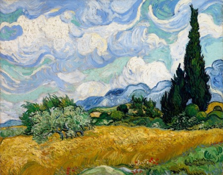
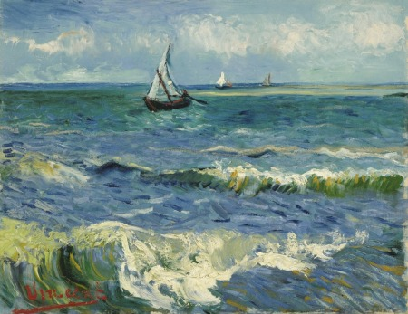

Obras

"Campo de trigo con cipreses"
Título original: Champ de blé avec cyprès
Título (inglés): Wheat Field with Cypresses
Estilo: Postimpresionismo
Tipo: Cuadro
Técnica: Óleo
Soporte: Lienzo
Año: 1889
Se encuentra en: Museo MET, New York

"Marina Les Saintes Maries de la Mer"
Título (inglés): Seascape near Les Saintes-Maries-de-la-Mer
Estilo: Postimpresionismo
Género: Marina
Tipo: Cuadro
Técnica: Óleo
Soporte: Lienzo
Año: 1888
Se encuentra en: Museo Van Gogh, Ámsterdam

"Almond Blossom"
También conocido como: Almendro en flor
Título original: Amandier en fleurs
Título (inglés): Almond Blossoms
Estilo: Postimpresionismo
Tipo: Cuadro
Técnica: Óleo
Soporte: Lienzo
Año: 1890
"Huerto de olivos"
Título original: Olivenhain
Título (inglés): Olive Orchard
Estilo: Postimpresionismo
Tipo: Cuadro
Técnica: Óleo
Soporte: Lienzo
Año: 1889(Junio)
Se encuentra en: Museo Nelson-Atkins, Misuri

"La noche estrellada sobre el Ródano"
Título original: Nuit étoilée sur le Rhône
Título (inglés): Starry Night Over the Rhone
Estilo: Postimpresionismo
Tipo: Cuadro
Técnica: Óleo
Soporte: Lienzo
Año: 1888
Se encuentra en: Museo de Orsay, París

"Almond Blossom"
Título original: La Chambre à coucher
Título (inglés): Bedroom in Arles
Estilo: Postimpresionismo
Tipo: Cuadro
Técnica: Óleo
Soporte: Tela
Año: 1888
"Campo con flores"
Título original: Veld met irissen bij Arles
Título (inglés): Field with Irises near Arles
Estilo: Postimpresionismo
Tipo: Cuadro
Técnica: Óleo
Soporte: Lienzo
Año: 1888

"Bodegón con membrillos
Título original: Nature morte aux coings
Título (inglés): Still Life with Quince Pears
Estilo: Postimpresionismo
Tipo: Cuadro
Técnica: Óleo
Soporte: Lienzo
Año: 1888-89
Se encuentra en: Galería Nuevos Maestros, Colecciones estatales de arte de Dresde, Alemania

"Jardín de Montmartre"
Autor: Vincent van Gogh
Título (inglés): Garden with courting couples: square Saint-Pierre
Estilo: Postimpresionismo
Tipo: Cuadro
Técnica: Óleo
Soporte: Lienzo
Año: 1887